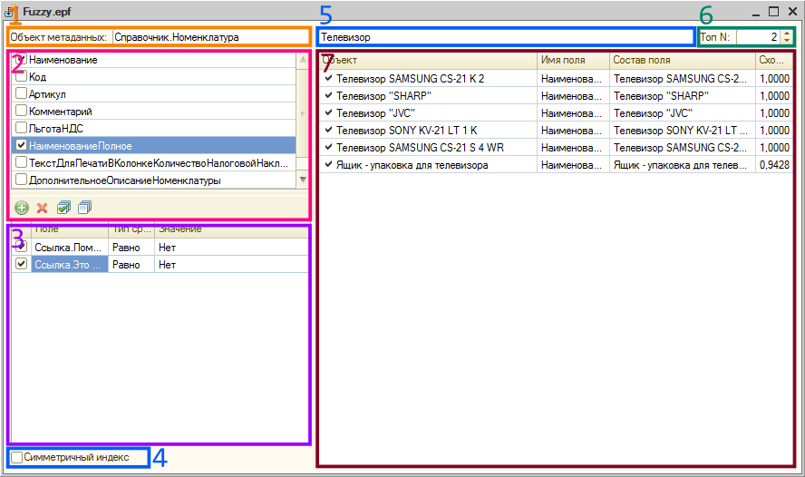

Симетричний режим призначено для пошуку дублікатів, асиметричний - для пошуку по частині рядка.
В таблиці результатів колонка "Назва поля" вказує на поле, по якому було знайдено відповідність, галками відмічені результати де найдено точне співпадіння.